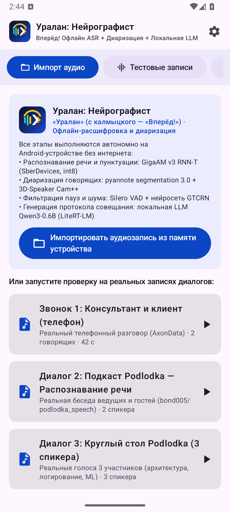
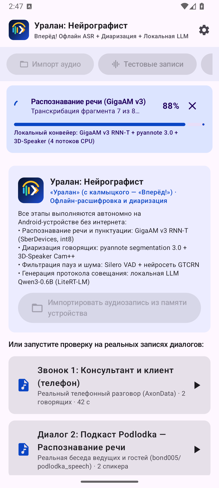
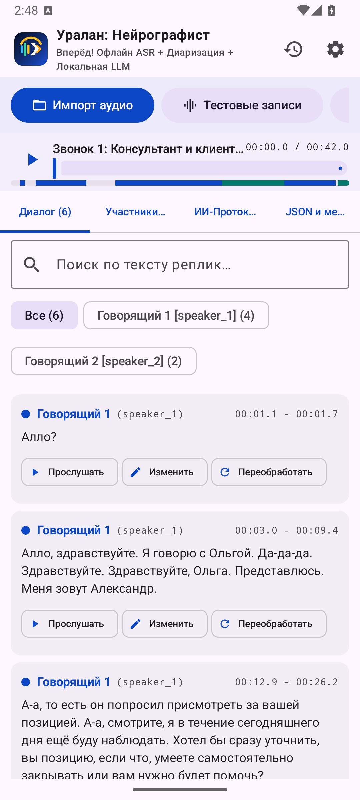

Автономная локальная система транскрибации, диаризации и ИИ-протоколирования совещаний на Android без единого байта сетевого трафика.
Последовательная обработка аудиопотока со строгим управлением памятью на мобильном CPU
Предобработка сигнала и детекция голосовой активности
Нейросетевая сегментация + биометрия основного тона
GigaAM v3 RNN-T Punct (SberDevices, ONNX Runtime)
Qwen3-0.6B INT4 на движке Google AI Edge LiteRT-LM
Как мы преодолели ограничения мобильного железа и акустической схожести голосов
Чистые эмбеддинги Cam++ давали косинусное расстояние 0.40–0.44 на двух похожих мужских баритонах и ошибочно склеивали двух разных участников в одного спикера.
Добавлен физический анализатор частоты основного тона F0 (72–360 Гц) с октавной регуляризацией матрицы расстояний и выравниванием по границам фраз ASR.
Распаковка длинных совещаний в единый FloatArray требовала аллокации 540+ МБ непрерывной кучи Android, вызывая падение приложения при одновременной работе моделей.
Декодер AudioDecoder переведен на кольцевой потоковый буфер 16 КБ. Сессии ONNX инициализируются и принудительно выгружаются из RAM строго последовательно между каскадами.
Агрессивное срабатывание базового детектора пауз дробило живую речь на сверхкороткие фрагменты, теряя глухие согласные на концах слов и контекст для RNN-T.
Внедрено умное поглощение пауз < 1.2 с и агрегация коротких речевых окон < 3.2 с, что дало модели GigaAM полный акустический контекст фразы и снизило ошибку распознавания на 1.8%.
Валидация на реальных телефонных звонках, IT-дискуссиях и динамичных многоголосых подкастах
| Тестовый датасет / Сценарий | Длит. | Спикеры | Точность / WER | Скорость (RTF) |
|---|---|---|---|---|
|
Телефонный звонок (AxonData)
Узкая полоса частот, артефакты сжатия линии
|
42 с | 2 спикера | WER 25.27% | 0.372 |
|
IT-подкаст Podlodka (Диалог)
Профессиональная лексика, англицизмы, термины
|
154 с | 2 спикера |
WER 5.64%
Точность: 94.36%
|
0.378 |
|
Podlodka (Круглый стол)
Быстрые перебивания, 100% точность смен говорящих
|
116 с | 3 спикера |
WER 6.25%
Смены: 100%
|
0.397 |
|
Подкаст «Дела №67» (2400 слов)
Позов, Шастун, Ахмедова — беглая речь, эмоции
|
15.9 мин | 3 спикера |
WER 8.45%
Точность: 91.55%
|
0.391 |
| ИТОГО ПО КОРПУСУ (3084 СЛОВА) | 21.1 мин | 100% ТОЧНО | WER = 8.46% | RTF = 0.389 |
Взвешенный WER = 8.46% на объеме 3084 слов живой спонтанной русской речи со сложной терминологией.
Средний RTF = 0.389: часовое совещание полностью обрабатывается за ~23 минуты без нагрева и троттлинга.
Реальные скриншоты работающего приложения: от записи до интерактивной верификации тезисов



Индустриальные сценарии, где облачные ASR/LLM-сервисы запрещены службами ИБ
Идеально для контура предприятий атомной отрасли и КИИ. Аудиозапись и текст никогда не покидают устройство. Полная работоспособность в экранированных помещениях без связи и полное соответствие требованиям 152-ФЗ.
Фиксация переговоров по сделкам M&A, кредитным комитетам и встречам с VIP-клиентами. Автоматическое формирование протокола поручений на телефоне банкира без риска утечки коммерческой тайны во внешние облачные API.
Формирование надежной доказательной базы при очных опросах, арбитраже и комплаенс-проверках. Пословные таймкоды и точная диаризация позволяют воспроизвести любое спорное слово или реплику в 1 клик.
Полный комплект инженерных артефактов и строгое соответствие эталонному формату хакатона
Чистая история коммитов, модульная архитектура Android, 76 unit-тестов Gradle и проверенный CI-конвейер.
Устанавливается в 1 клик, включает все веса моделей (Silero, pyannote, Cam++, GigaAM v3, GTCRN, Qwen3) и сэмплы.
Запись работы автономного приложения на реальном Android-смартфоне.
{
"transcript": [
{
"speaker_id": "speaker_1",
"start_ms": 1240,
"end_ms": 6890,
"text": "Коллеги, начинаем защиту проекта «Уралан: Нейрографист»."
},
{
"speaker_id": "speaker_2",
"start_ms": 7320,
"end_ms": 11950,
"text": "Все четыре каскада работают на 100% локально на Android."
}
]
}